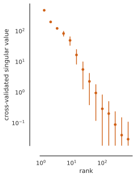

Install all required dependencies
# TODO uncomment before final packaging
# %pip install git+https://github.com/BonnerLab/ccn-tutorial.gitHere’s a link to this notebook on Google Colab.
Just as PCA identifies the principal directions of variance of a system, cross-decomposition identifies the principal directions of shared variance between two systems X and Y. Specifically, just as PCA computes the eigendecomposition of the auto-covariance, cross-decomposition computes the singular value decomposition of the cross-covariance:
\begin{align*} \text{cov}(X, Y) &= X^\top Y / (n - 1)\\ &= U \Sigma V^\top \end{align*}
Here,

The cross-decomposition method we describe here is more specifically known as Partial Least Squares Singular Value Decomposition (PLS-SVD). We simplify it to “cross-decomposition” since we will be developing a cross-validated version of the typical estimators.
# TODO uncomment before final packaging
# %pip install git+https://github.com/BonnerLab/ccn-tutorial.gitimport warnings
import numpy as np
import pandas as pd
import xarray as xr
import torch
import seaborn as sns
from matplotlib import pyplot as plt
from matplotlib_inline.backend_inline import set_matplotlib_formats
from IPython.display import display
from utilities.brain import (
load_dataset,
average_data_across_repetitions,
load_stimuli,
)
from utilities.computation import svd, assign_logarithmic_bins%matplotlib inline
sns.set_theme(
context="notebook",
style="white",
palette="deep",
rc={"legend.edgecolor": "None"},
)
set_matplotlib_formats("svg")
pd.set_option("display.max_rows", 5)
pd.set_option("display.max_columns", 10)
pd.set_option("display.precision", 3)
pd.set_option("display.show_dimensions", False)
xr.set_options(display_max_rows=3, display_expand_data=False)
warnings.filterwarnings("ignore")random_state = 0
rng = np.random.default_rng(seed=random_state)class PLSSVD:
def __init__(self) -> None:
self.left_mean: np.ndarray
self.right_mean: np.ndarray
self.left_singular_vectors: np.ndarray
self.right_singular_vectors: np.ndarray
def fit(self, /, x: np.ndarray, y: np.ndarray) -> None:
1 self.left_mean = x.mean(axis=-2)
self.right_mean = y.mean(axis=-2)
x_centered = x - self.left_mean
y_centered = y - self.right_mean
n_stimuli = x.shape[-2]
device = torch.device("cuda" if torch.cuda.is_available() else "cpu")
cross_covariance = (np.swapaxes(x_centered, -1, -2) @ y_centered) / (
n_stimuli - 1
2 )
(
self.left_singular_vectors,
self.singular_values,
self.right_singular_vectors,
) = svd(
torch.from_numpy(cross_covariance).to(device),
n_components=min([*x.shape, *y.shape]),
truncated=True,
seed=random_state,
3 )
self.left_singular_vectors = self.left_singular_vectors.cpu().numpy()
self.singular_values = self.singular_values.cpu().numpy()
self.right_singular_vectors = self.right_singular_vectors.cpu().numpy()
def transform(self, /, z: np.ndarray, *, direction: str) -> np.ndarray:
match direction:
case "left":
4 return (z - self.left_mean) @ self.left_singular_vectors
case "right":
return (z - self.right_mean) @ self.right_singular_vectors
case _:
raise ValueError("direction must be 'left' or 'right'")In the same way that we can cross-validated PCA to estimate the shared variance across presentations of the same stimuli within a participant, we can use cross-decomposition to estimate the shared variance in the neural representations of the same stimuli across participants.
We have two data matrices X \in \mathbb{R}^{N \times P_X} and Y \in \mathbb{R}^{N \times P_Y} from two participants, containing neural responses to the same N stimuli. Note that the number of neurons or voxels in the two subjects (P_X and P_Y) can be different – we don’t need to assume any sort of anatomical alignment between brains.
In cross-validated PCA, we measured stimulus-specific variance based on cross-trial generalization. Here, even if we don’t have different repetitions of the same stimulus, we could use an analogous cross-validation approach. Instead of testing generalization across different presentations of the stimuli, we can evaluate the reliable shared variance between the two systems across stimuli.
Specifically, we can divide the images into two: a training split and a test split. We can compute singular vectors on the training split, and evalute test singular values on the test split:
\begin{align*} \text{cov}(X_\text{train}, Y_\text{train}) &= X_\text{train}^\top Y_\text{train} / (n - 1)\\ &= U \Sigma V^\top \end{align*}
\begin{align*} \Sigma_\text{cross-validated} &= \text{cov}(X_\text{test} U, Y_\text{test} V)\\ &= \left( X_\text{test} U \right) ^\top \left( Y_\text{test} V \right) / (n - 1) \end{align*}

subject_1 = average_data_across_repetitions(
load_dataset(subject=0, roi="general")
).sortby("stimulus_id")
subject_2 = average_data_across_repetitions(load_dataset(subject=1, roi="general"))
stimuli = load_stimuli()["stimulus_id"].values
display(subject_1)
display(subject_2)<xarray.DataArray 'fMRI betas' (presentation: 700, neuroid: 15724)>
0.4915 0.2473 0.08592 0.05828 -0.1315 ... -0.2126 -0.6315 -0.5751 -0.5354
Coordinates: (3/4)
x (neuroid) uint8 12 12 12 12 12 12 12 ... 71 72 72 72 72 72 72
y (neuroid) uint8 21 22 22 22 22 22 23 ... 34 29 29 30 30 30 31
... ...
stimulus_id (presentation) object 'image02950' ... 'image72948'
Dimensions without coordinates: presentation, neuroid
Attributes: (3/8)
resolution: 1pt8mm
preprocessing: fithrf_GLMdenoise_RR
... ...
postprocessing: averaged across first two repetitions<xarray.DataArray 'fMRI betas' (presentation: 700, neuroid: 14278)>
-0.8554 0.0399 0.09591 -0.4694 -0.4573 ... -1.052 -0.6467 -0.6164 -0.8053
Coordinates: (3/4)
x (neuroid) uint8 11 11 11 11 12 12 12 ... 71 71 71 71 71 71 71
y (neuroid) uint8 23 25 25 26 22 22 22 ... 28 28 29 29 30 30 30
... ...
stimulus_id (presentation) object 'image02950' ... 'image72948'
Dimensions without coordinates: presentation, neuroid
Attributes: (3/8)
resolution: 1pt8mm
preprocessing: fithrf_GLMdenoise_RR
... ...
postprocessing: averaged across first two repetitionsdef compute_cross_participant_spectrum(
x: xr.DataArray,
y: xr.DataArray,
/,
train_fraction: float = 7 / 8,
) -> np.ndarray:
stimuli = x["stimulus_id"].values
n_train = int(train_fraction * len(stimuli))
stimuli = rng.permutation(stimuli)[:n_train]
train_indices = np.isin(x["stimulus_id"].values, stimuli)
x_train = x.isel({"presentation": train_indices})
y_train = y.isel({"presentation": train_indices})
x_test = x.isel({"presentation": ~train_indices})
y_test = y.isel({"presentation": ~train_indices})
scorer = PLSSVD()
scorer.fit(x_train.values, y_train.values)
x_test_transformed = scorer.transform(x_test.values, direction="left")
y_test_transformed = scorer.transform(y_test.values, direction="right")
return np.diag(
np.cov(
x_test_transformed,
y_test_transformed,
rowvar=False,
)[:n_train, n_train:]
)
cross_participant_spectrum = compute_cross_participant_spectrum(subject_1, subject_2)
data = pd.DataFrame(
{
"cross-validated singular value": cross_participant_spectrum,
"rank": assign_logarithmic_bins(
1 + np.arange(len(cross_participant_spectrum)),
min_=1,
max_=10_000,
points_per_bin=5,
),
}
)
fig, ax = plt.subplots()
sns.lineplot(
ax=ax,
data=data.assign(arbitrary=0),
x="rank",
y="cross-validated singular value",
marker="o",
dashes=False,
hue="arbitrary",
palette=["#cf6016"],
ls="None",
err_style="bars",
estimator="mean",
errorbar="sd",
legend=False,
)
ax.set_xscale("log")
ax.set_yscale("log")
ax.set_aspect("equal", "box")
sns.despine(ax=ax, offset=20)
def compute_within_participant_spectrum(data: xr.DataArray) -> np.ndarray:
x_train = data.isel({"presentation": data["rep_id"] == 0}).sortby("stimulus_id")
y_train = data.isel({"presentation": data["rep_id"] == 0}).sortby("stimulus_id")
x_test = data.isel({"presentation": data["rep_id"] == 0}).sortby("stimulus_id")
y_test = data.isel({"presentation": data["rep_id"] == 1}).sortby("stimulus_id")
scorer = PLSSVD()
scorer.fit(x_train.values, x_train.values)
x_test_transformed = scorer.transform(x_test.values, direction="left")
y_test_transformed = scorer.transform(y_test.values, direction="right")
n_components = x_test_transformed.shape[-1]
return np.diag(
np.cov(
x_test_transformed,
y_test_transformed,
rowvar=False,
)[:n_components, n_components:]
)
within_participant_spectrum = compute_within_participant_spectrum(
load_dataset(subject=0, roi="general")
)
data = pd.concat(
[
data.assign(comparison="cross-individual"),
pd.DataFrame(
{
"cross-validated singular value": within_participant_spectrum,
"rank": assign_logarithmic_bins(
1 + np.arange(len(within_participant_spectrum)),
min_=1,
max_=10_000,
points_per_bin=5,
),
}
).assign(comparison="within-individual"),
],
axis=0,
)
with sns.axes_style("whitegrid"):
fig, ax = plt.subplots()
sns.lineplot(
ax=ax,
data=data,
x="rank",
y="cross-validated singular value",
palette=["#514587", "#cf6016"],
hue="comparison",
hue_order=["within-individual", "cross-individual"],
style="comparison",
style_order=["within-individual", "cross-individual"],
markers=["o", "s"],
dashes=False,
ls="None",
err_style="bars",
estimator="mean",
errorbar="sd",
)
ax.set_xscale("log")
ax.set_yscale("log")
ax.set_aspect("equal", "box")
ax.grid(True, which="minor", c="whitesmoke")
ax.grid(True, which="major", c="lightgray")
for loc in ("left", "bottom", "top", "right"):
ax.spines[loc].set_visible(False)The cross-validated cross-decomposition approach we describe here allows many possible levels of generalization.
In fact, we could combine several of these to get very strict generalization criteria: we could even estimate the spectrum of variance that generalizes across trials, stimuli, and individuals.